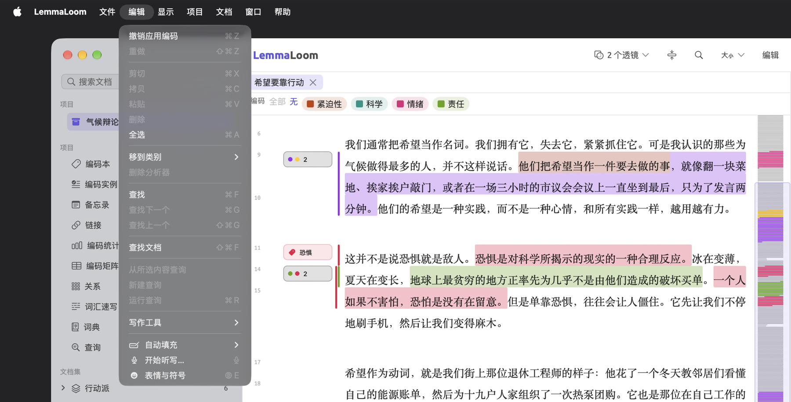
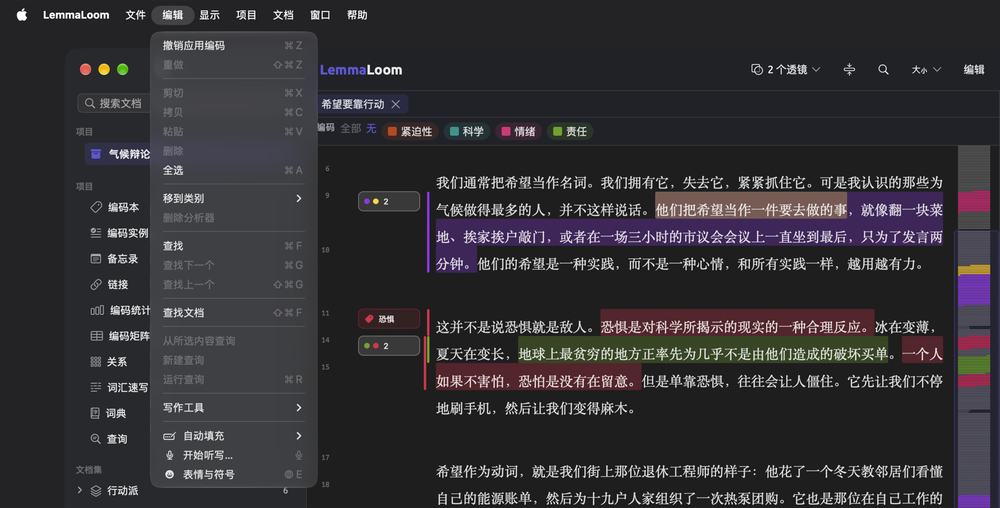
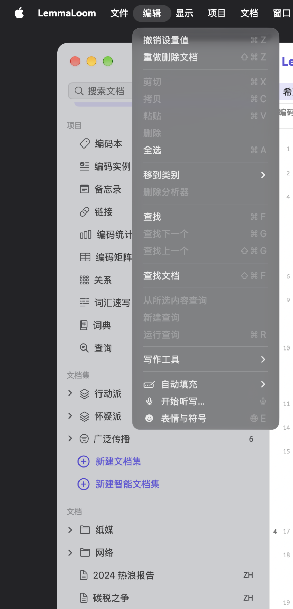
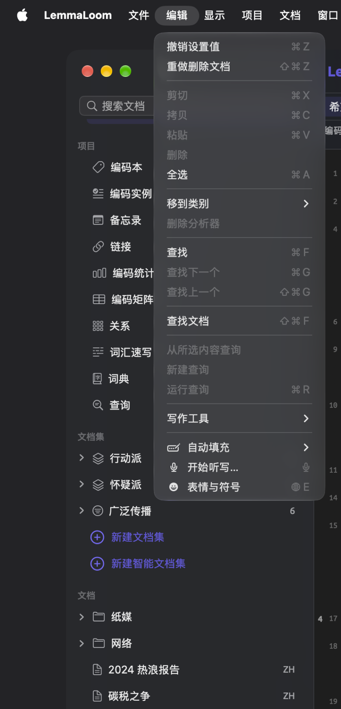
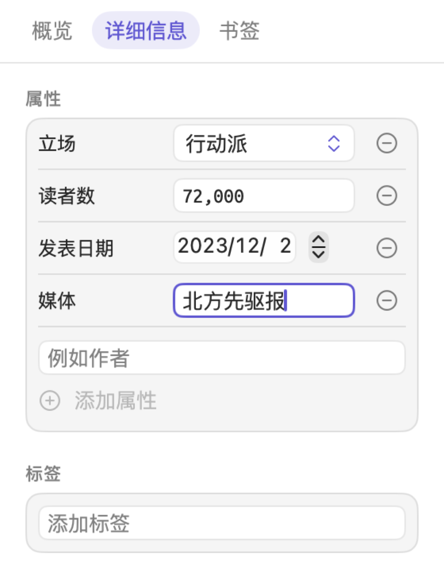
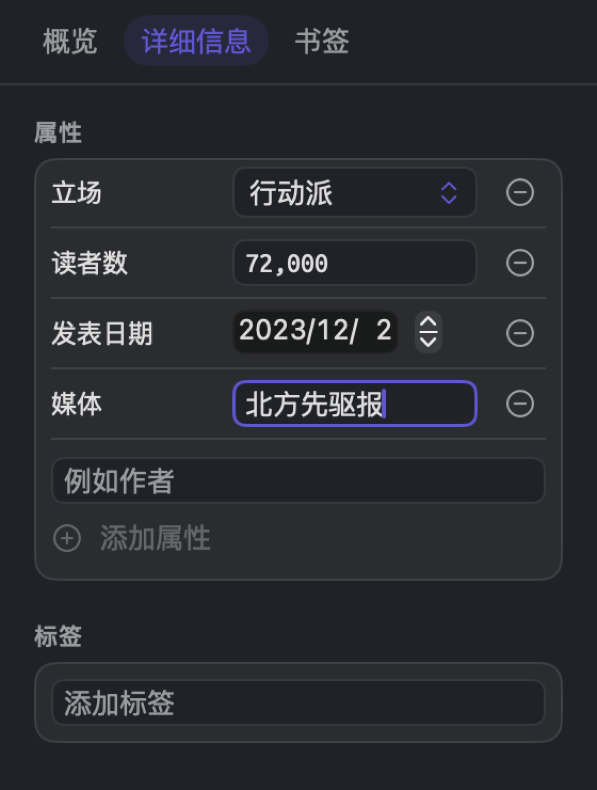
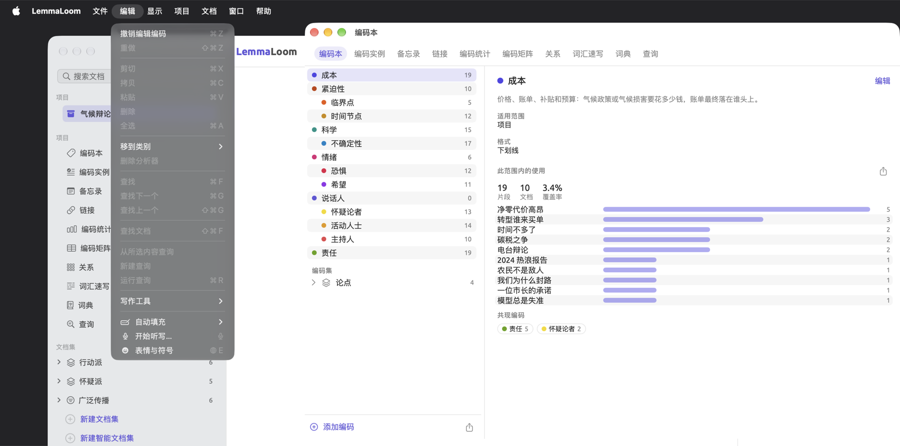
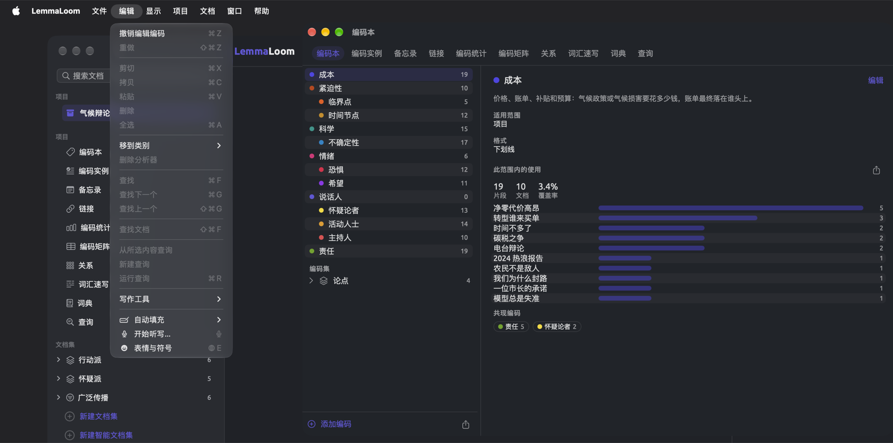

撤销与重做
在 LemmaLoom 中所做的更改会在修改的那一刻立即保存，LemmaLoom 同时把这些更改记入历史。用编辑 ▸ 撤销可以撤回这些更改，每次一步，按从新到旧的顺序沿着历史往回退，直到回到你想要的那一步。项目中几乎所有操作都可以撤销，包括删除文档和为整个文档集自动编码。
删除项目、文档或编码，以及合并两个编码时，LemmaLoom 会请你确认。其他大多数内容（例如分组、文档集、标签、属性、词典和分析器）会立即删除，不做提示。误删的内容可以用编辑 ▸ 撤销恢复。
删除项目是永久性的，导入或翻译文档则会清除一部分历史。本章后文的无法撤销的操作会具体说明这些情况。
本指南的示例使用“气候辩论”项目，第 1 章“简介”中的示例项目对它有完整的介绍。如果想动手练习，可以用文件 ▸ 导入 ▸ 示例项目导入这个项目。
关键术语
- 步骤是 LemmaLoom 记录下来的一次操作。它的名称显示在编辑菜单中，表明是哪个命令引起了这次更改，例如应用编码和删除文档。一次编码是一步；运行一次自动编码（见第 7 章“编码”中的自动为段落编码），即使生成了两百个编码实例和四个新编码，也只算一步。
- 撤销历史是指所有可以撤销的步骤。每个窗口都有各自独立的撤销历史（见本章后文的步骤属于哪个窗口）。
撤销更改
- 点按你做出更改的那个窗口，使它成为当前窗口。对大多数更改来说，这就是主窗口。
- 如果光标在文本框中，请点按文本框以外的地方。
- 打开编辑菜单。第一项写明将要撤销的步骤，例如撤销应用编码。
- 选取这一项，或者按下 ⌘Z。


如果要在历史中后退多步，请再次从菜单中选取撤销。每选取一次，菜单就会显示历史中下一步的名称。快速连按几次 ⌘Z，会依次撤回这些操作。没有可以撤销的步骤时，这个命令的名称变为撤销，并处于停用状态。
撤销会把这一步影响到的所有内容恢复原状。因此，执行撤销删除文档后，文档会连同它的全部文本、编码实例、备忘录、链接、书签和属性值一起回来，并重新归入它原先所在的每个文档集。
如果撤销会恢复文本内容，LemmaLoom 会在后台为这些文本重新建立索引（见第 21 章“分析与索引”中的重新为文档建立索引）。索引进度可以在窗口 ▸ 活动（⌥⌘0）中查看。
重做更改
撤销一步之后，编辑菜单中总会出现重做这一步的选项，例如重做应用编码。点按这个菜单项，或者在键盘上按下 ⇧⌘Z。撤销了多少步，就可以重做多少步，从最后撤销的那一步开始。
可以重做的步骤只保留到你在同一窗口中做出下一项更改为止。例如，如果你又为一段文字编码，之前撤销的步骤就永久丢失了，重做也随之停用。


一个例子
假设你正在主窗口中处理“希望要靠行动”。你把一段文字编码为“恐惧”，然后在检查器文本标签页的详细信息分面中，把这篇文章的属性“媒体”从“每周纪事”改为 北方先驱报，最后删除了“碳税之争”。下表列出每次操作之后，以及随后几次撤销和重做之后，编辑菜单中出现的选项。


| 序号 | 你的操作 | 撤销项 | 重做项 |
|---|---|---|---|
| 1 | 把一段文字编码为“恐惧” | 撤销应用编码 | 重做（已停用） |
| 2 | 在“媒体”字段中选中“每周纪事”，输入 北方先驱报，然后点按阅读器 | 撤销设置值 | 重做（已停用） |
| 3 | 删除“碳税之争” | 撤销删除文档 | 重做（已停用） |
| 4 | 按下 ⌘Z | 撤销设置值 | 重做删除文档 |
| 5 | 按下 ⌘Z | 撤销应用编码 | 重做设置值 |
| 6 | 按下 ⇧⌘Z | 撤销设置值 | 重做删除文档 |
| 7 | 把另一段文字编码为“希望” | 撤销应用编码 | 重做（已停用） |
第 4 行之后，“碳税之争”回到项目中。第 5 行之后，“媒体”变回“每周纪事”；第 6 行又让 北方先驱报 回来了。第 7 行的编码是新的更改，所以重做已停用，“碳税之争”仍留在项目中。
第 2 行虽然输入了 5 个字，却只有一步。原因见下文的在属性字段中输入值。
更改如何成为步骤
每个命令都算作一步，无论它改动了多少内容。例如：
- 选中六个文档时执行删除文档，算作一步。同样，删除“时间不多了”时，“时间不多了 (英语)”会在同一步中一并删除，因为后者是前者的译本。
- 在文档信息中点按存储也是一步，无论你更改了文档的多少项信息（例如名称、标签、属性值或语言）。
- 一次自动编码运行算作一步。撤销会移除这次运行添加的所有编码实例，并删除它创建的所有编码。如果你在运行完成之前点按了停止，撤销会撤回到那时为止已经完成的全部内容。
- 查询操作菜单中的为命中添加书签…和添加到词典，以及属性窗口中的导入，每执行一次也都算作一步，涵盖它们生成的全部内容。
撤销一个命令，也会撤回它在别处引起的更改。你在“时间不多了”中为一段文字编码时，LemmaLoom 会在“时间不多了 (英语)”中添加相应的编码实例。撤销应用编码会同时撤回两个文档中的更改。
在属性字段中输入值
在检查器文本标签页的详细信息分面中以及属性窗口中，文本类型的属性字段会在你输入时自动保存，其他类型的值则在输入后立即自动保存。只要中间没有其他步骤，LemmaLoom 就会把同一文档中对同一字段的所有更改归入一个设置值步骤。
在“媒体”中输入 北方先驱报 只产生一步，编辑 ▸ 撤销设置值会把字段恢复到你开始输入之前的状态。更改“立场”会产生另一步。如果最后又回到了起点（例如输入一些内容后又把它删掉），整个步骤就会从历史中移除。检查器编码标签页的编码实例分面中，编码实例和备忘录的属性字段也是如此。
要一次撤销整个值，请先点按别处，再选取编辑 ▸ 撤销设置值。
需要一段时间的更改
删除多个文档、为文档集自动编码和导入编码本都需要一些时间。当前的步骤要等完成之后才会显示在编辑菜单中。在此之前，⌘Z 撤销的是前一步。撤销之前，请确认最后一个被删除的文档已经从导航栏中消失、自动编码对话框显示完成，或者正在导入 REFI-QDA 编码本对话框已经关闭。
步骤属于哪个窗口
LemmaLoom 的每个窗口都有自己的历史。主窗口、编码本窗口、文档窗口（来自在新窗口中打开），以及你正在使用的查询、查询结果、分析器、标签和属性窗口都是如此。用文件 ▸ 新建窗口再打开一个主窗口，它又会有一份独立的历史来记录更改。编辑 ▸ 撤销和编辑 ▸ 重做等命令只作用于当前窗口。
- 步骤属于更改开始时的当前窗口。在标签窗口中重命名标签“热门”之后，请先点按标签窗口，再选取编辑 ▸ 撤销重命名标签。
- 从对话框中发起的操作所引起的更改，属于打开这个对话框的窗口。文档信息对话框的更改记录在主窗口的历史中；对话框关闭后，请在主窗口中用编辑 ▸ 撤销撤回这些更改。同样，编码面板的更改记录在你打开它的那个窗口的历史中。从属性窗口打开的对话框，其更改都记录在属性窗口的历史中。
- 后台操作属于发起它的窗口，与完成时哪个窗口是当前窗口无关。在主窗口中开始的自动编码会记入主窗口的历史。
- 主窗口的历史涵盖你的所有项目。如果你在“气候辩论”中为一段文字编码，然后切换到另一个项目，再按下 ⌘Z，这次编码会在原来的项目中撤销，而另一个项目仍是当前项目。如果想看到撤销的结果，请先切换回去。


可以撤销的操作
下列每个表格的最右一栏，是编辑菜单中跟在撤销或重做后面的名称。
编码与编码实例
| 你的操作 | 步骤 |
|---|---|
| 为一段文字编码，包括带属性的编码所要求填写的值 | 应用编码 |
| 在编码面板中用添加编码“…”或实境编码“…”，或者用文档 ▸ 实境编码，一次完成新建编码并用它为这段文字编码 | 应用编码 |
| 在编码面板中移除编码实例，或者在编码实例分面或编码实例视图中使用删除编码实例 | 删除编码实例 |
| 用更改编码为编码实例换一个编码 | 更改编码 |
| 新建编码，包括在编码本窗口和编码分面中使用添加子编码 | 新建编码 |
| 更改编码的名称、颜色、格式、适用范围、标签、属性或说明 | 编辑编码 |
| 通过拖动或移到，把编码移到另一个编码之下或移到顶层 | 移动编码 |
| 合并到另一个编码 | 合并 |
| 删除编码 | 删除编码 |
| 添加到编码集 ▸ 从编码新建编码集 | 新建编码集 |
| 添加到编码集 | 添加到编码集 |
| 从编码集中移除 | 从编码集中移除 |
| 重命名编码集 | 重命名 |
| 用编码集快捷菜单中的删除，或者编码分面中它的废纸篓按钮删除编码集 | 删除编码集 |
| 在透镜或查询中使用自动编码… | 自动编码 |
| 文件 ▸ 导入 ▸ REFI-QDA 编码本 | REFI-QDA 编码本 |
撤销删除编码会恢复这个编码本身，包括它的所有子编码、这些编码的编码实例以及相关的属性值。撤销合并会取消这次合并，恢复被合并的编码，连同它的所有编码实例、子编码、备忘录、编码集以及与它相关的已存储查询。
撤销REFI-QDA 编码本会移除这次导入添加到编码本中的全部内容（见第 22 章“交换与导出”中的REFI-QDA 编码本）。
备忘录、链接和书签
| 你的操作 | 步骤 |
|---|---|
| 写备忘录 | 新建备忘录 |
| 更改备忘录的文本、编码、标签或属性值 | 编辑备忘录 |
| 删除备忘录 | 删除备忘录 |
| 链接两段文字 | 新建链接 |
| 更改链接的关系、评论、颜色或标签 | 编辑链接 |
| 删除链接 | 删除链接 |
| 为一段文字添加书签 | 书签 |
| 更改书签的评论或颜色 | 编辑书签 |
| 移除书签 | 移除书签 |
| 查询操作菜单中的为命中添加书签… | 为命中添加书签 |
LemmaLoom 会把你的备忘录、链接和书签复制到文档的译文中。这些副本与原件属于同一步，所以撤销会同时作用于两者。
项目与文档
| 你的操作 | 步骤 |
|---|---|
| 文件 ▸ 新建项目 | 新建项目 |
| 重命名项目、文档、分组或文档集 | 重命名 |
| 在项目信息中点按存储，包括在其中添加或移除的属性 | 项目信息 |
| 在文档信息中点按存储 | 文档信息 |
| 在检查器文本标签页的详细信息分面中更改文档的标签 | 编辑标签 |
| 编辑文档文本后点按存储 | 编辑文本 |
| 选中一个文档时使用删除文档 | 删除文档 |
| 选中多个文档时使用删除文档 | 删除文档 |
| 文件 ▸ 新建分组，或者移到分组 ▸ 新建分组 | 新建分组 |
| 移到分组 | 移到分组 |
| 删除分组 | 删除分组 |
| 文档信息中分析器旁边的废纸篓按钮（移除输出） | 移除输出 |
| 对已移除输出的分析器点按运行 | 运行 |
| 对导入时未建立索引的文档使用立即建立索引（在文档信息或阅读器的状态栏中） | 立即建立索引 |
文件 ▸ 新建分组会产生两步，先是新建分组，然后是你输入名称并按下 Return 键时产生的重命名。要移除这个分组，请撤销两次；如果你使用了默认名称，只需撤销一次，因为那时只有一步可以撤销。移到分组 ▸ 新建分组和导航栏中的新建文档集也是如此。
删除分组后，其中的文档仍留在项目中，但不再属于任何分组。执行撤销删除分组后，这些文档会回到恢复的分组中，引用这个分组名称的智能文档集条件也会恢复。
撤销删除文档后（无论删除的是一个还是多个文档），每个文档都会连同它的译文和媒体文件一起恢复（见第 3 章“项目与文档”中的删除文档）。适用范围为该文档的所有编码会重新加入；存储在该文档中的查询在删除时被移到了项目层级，撤销后也会回到该文档中。如果某个文档有等待中的翻译，删除这个文档会中止翻译；撤销删除之后，请重新开始翻译。
撤销编辑文本会恢复之前的文本，每个编码实例、备忘录、书签和链接也都回到原来的位置。对于录音，转写文本的时间信息会恢复；对于有译文的文档，对齐也会恢复。
更多详细说明见第 5 章“阅读与编辑”中的撤销编辑。
如果撤销的是在文档信息中对语言或从索引中排除模式所做的更改，文档会重新建立索引。撤销移除输出也是如此，分析器会重新为这个文档运行。撤销运行会删除分析器的输出，撤销立即建立索引则会重新关闭这个文档的索引（见第 21 章“分析与索引”中的为文档选择分析器）。
文档集、标签和属性
| 你的操作 | 步骤 |
|---|---|
| 在导航栏中使用新建文档集，或者在查询中使用从命中创建文档集 | 新建文档集 |
| 添加到文档集 | 添加到文档集 |
| 从文档集中移除 | 从文档集中移除 |
| 删除文档集 | 删除文档集 |
| 新建智能文档集，或者在查询中使用存储为智能文档集 | 新建智能文档集 |
| 用编辑或项目 ▸ 编辑智能文档集更改智能文档集的条件 | 编辑智能文档集 |
| 在标签窗口或导航栏中重命名标签 | 重命名标签 |
| 在标签窗口或导航栏中删除标签 | 删除标签 |
| 属性窗口中的添加属性，或者在检查器文本标签页的详细信息分面中输入新的属性名称 | 添加属性 |
| 用编辑更改属性的名称、类型、选项或描述（在属性窗口的管理菜单中，或者在编码编辑器中编码属性的旁边） | 编辑属性 |
| 管理菜单中的左移或右移 | 移动属性 |
| 管理菜单中的删除 | 删除属性 |
| 为一个文档输入、更改或清除值，或者用设置值为多个文档设置值 | 设置值 |
| 属性窗口中的导入 | 导入属性 |
撤销删除文档集会恢复这个文档集（如果是智能文档集，还包括它的条件），以及与它关联的每个查询。
标签由你的所有项目共用，因此重命名标签和删除标签会影响使用这个标签的每个项目、文档、编码、备忘录、链接和智能文档集条件。撤销重命名标签时，这个标签在出现过的所有地方都会恢复原来的名称，为它打开的标签页也会随之改回原名。撤销删除标签会让原先带有这个标签的所有内容重新带上它，但删除标签时关闭的标签页仍保持关闭。
如果一个编辑属性步骤更改了属性类型，撤销它也会恢复 LemmaLoom 转换过的所有值。无论是在项目信息中还是在属性窗口中删除的属性，撤销后都会连同它在删除前所在各处的值一起回来。撤销导入属性会撤回这次导入写入的每个值和创建的每个属性。
查询、词典和分析器
| 你的操作 | 步骤 |
|---|---|
| 用存储或存储为…存储查询，或者把新查询存储为透镜 | 存储查询 |
| 对已存储的查询使用重命名… | 重命名 |
| 对已存储的查询使用存储为透镜… | 存储为透镜 |
| 移除透镜 | 移除透镜 |
| 删除查询 | 删除查询 |
| 新建词典 | 新建词典 |
| 重命名词典或类别 | 重命名 |
| 删除词典 | 删除词典 |
| 添加类别 | 添加类别 |
| 更改类别的颜色 | 编辑类别 |
| 删除类别 | 删除类别 |
| 在添加词条字段中添加词条，或者使用阅读器选区栏或查询操作菜单中的添加到词典 | 添加到词典 |
| 移除词条 | 移除词条 |
| 通过拖动或移到类别，把词条移到另一个类别 | 移动词条 |
| 在窗口 ▸ 分析器中为新分析器点按存储，或者在查询中使用存储为分析器… | 添加分析器 |
| 为已有的分析器点按存储，或者对已有分析器的查询使用存储为分析器… | 编辑分析器 |
| 删除分析器 | 删除分析器 |
| 更新分析器 | 更新分析器 |
你在构建器中对查询所做的更改，会在存储查询时写入（见第 15 章“构建查询”中的存储查询）。打开已存储的查询或模板，或者选取新建查询，都会替换查询的当前状态。如果自上次存储以来有过更改，可以用编辑 ▸ 撤销把它们找回来；“撤销”菜单项以你打开的查询或模板命名，或者显示为撤销新建查询。此外，选取查询操作菜单中的冻结值也会替换当前查询。无论查询之前是否有尚未存储的更改，都可以用撤销冻结值撤回。
如果已存储的查询有尚未存储的更改，对它选取存储为透镜…时，LemmaLoom 会先把这些更改存储为单独的存储查询步骤，再存储为透镜；因此撤销两次才能把两者都撤回。
撤销对分析器脚本或语言的更改，或者撤销删除分析器时，分析器会对其所适用语言的文档重新运行。
有关分析器的更多信息，请参阅第 20 章“自定义分析器”。
无法撤销的操作
删除项目
删除项目是不可撤回的操作，它还会从每个窗口的历史中移除与这个项目、它的文档或属性有关的步骤。如果需要一份日后可以恢复的备份，请先用文件 ▸ 导出 ▸ LemmaLoom 项目导出项目（见第 22 章“交换与导出”）。
导入文档
导入文本文件、PDF 文档、网页或录音时，新文档一出现，这个项目之前的大多数步骤就会从每个窗口的历史中清除。其他项目中的步骤会保留，对自定义分析器的更改也会保留。
假设你之前删除了“碳税之争”，并把“时间节点”合并到了“紧迫性”，现在又向同一个项目导入一个 PDF 文件。导入之后，删除“碳税之争”和把“时间节点”合并到“紧迫性”这两步就都无法撤销了。需要撤销的步骤，请在导入之前撤销。
如果决定把导入的文档从项目中移除，请删除它，这次删除本身可以撤销。有关导入文档的更多信息，请参阅第 4 章“导入资料”中的导入文档。
要移除 REFI-QDA 项目、LemmaLoom 归档或示例项目导入的内容，请删除整个项目，或者删除它添加的文档。有两种导入是可以撤销的步骤，即REFI-QDA 编码本和导入属性（见上文的表格）。
翻译文档
译文（见第 9 章“译文与分屏浏览”）一完成并出现在原文下方，LemmaLoom 就会从每个窗口的历史中删去之前与原文有关的所有步骤，包括原文中编码实例、链接、书签和属性值的步骤，以及对原文所做的编辑和更改。
如果不再需要某个译文，像删除其他文档一样删除它即可，这次删除可以撤销。
项目以外的更改
历史记录的是对项目内容所做的全部更改。下列更改一经做出就立即生效，要撤回它们，把它们改回去即可：
- 在LemmaLoom ▸ 设置…中所做的更改，包括主题选择、阅读器的外观设置和透镜的颜色自定义；
- 在收藏中添加或移除项目；
- 打开了哪些标签页、启用了哪些透镜、阅读器中隐藏了哪些编码、检查器显示哪个标签页，以及窗格的大小。
在文本框中输入
光标在文本框中时（例如编码编辑器中的名称栏、备忘录文本、你在导航栏中正在输入的名称，以及各个搜索栏），⌘Z 和 ⇧⌘Z 会像在其他 macOS 应用中一样撤销和重做你的输入。在文本框中，编辑菜单显示撤销键入。离开文本框之后，⌘Z 又会作用于 LemmaLoom 的历史。
输入的文字只有在你确认之后才会成为步骤。确认是指在对话框中点按存储（命名时则是按下 Return 键或点按别处）。命名时按下 Esc 键，或者在对话框中点按取消，都会放弃你输入的内容。文档信息中的立即建立索引、运行和移除输出等命令会立即生效。从编码编辑器弹出的编辑属性对话框中的存储按钮也是如此，它会把编辑这个属性的全部改动合为一个编辑属性步骤。即使你随后点按取消，这些步骤也都会保留。
文档文本编辑器也遵循这一规则。编辑时，⌘Z 撤销你的输入。点按存储会把整次编辑记为一个编辑文本步骤，点按取消则放弃这次编辑。第 5 章“阅读与编辑”中的编辑与存储对此有更详细的说明。
属性值是这一规则的例外，因为属性字段会自动保存你输入的任何值（见本章前文的在属性字段中输入值）。
历史保留多久
历史会一直保留到你退出 LemmaLoom。关闭最后一个打开的窗口时，LemmaLoom 会退出。不过，关闭任何一个窗口，都会结束这个窗口的历史。再次打开 LemmaLoom 后，在本次使用中做出更改之前，编辑 ▸ 撤销会一直处于停用状态。
删除含有媒体录音的文档时，LemmaLoom 会保留它的音频或视频录音，以便日后撤销。下次启动 LemmaLoom 时，这个录音会被永久删除（见第 2 章“开始使用”中的工作保存在哪里）。
命令
| 命令 | 快捷键 | 适用场合 |
|---|---|---|
| 编辑 ▸ 撤销 | ⌘Z | 在任何有步骤可撤销的窗口中 |
| 编辑 ▸ 重做 | ⇧⌘Z | 撤销之后，直到你做出新的更改 |
LemmaLoom 的所有快捷键都列在第 25 章“键盘快捷键”中。